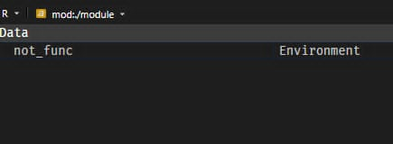

3.1 Structuring and constructing modules part 1: Initialization
I’ll start on how to construct a module preliminarily. To demonstrate how to construct modules, let’s work with an example folder named {./module}. Each script or subfolder within this directory will serve as a separate module or submodule. The files are expected to be empty, since I’ll be addressing some of them, or you can visit {./module} to view the pre-written code.
3.1.1 The structure
Here’s the structure of the {./module} folder I initialize:
module/
├── __init__.r
├── convert.r
├── hello_world.r
├── matrix_ops.r
├── not_func.r
├── tables.r
└── statistics/
├── __init__.r
├── cor.r
├── corrr.r
├── time_series.r
└── models/
├── __init__.r
├── linear.r
├── logistic.r
└── baseline_logit.r3.1.1.1 Initialization
The __init__.r file is a special file, acts as the initialization file which marks {./module} folder as a package, in which will be executed once you import {./module} as a module.
- Really beneficial because you don’t need to explicitly load the script as modules, repetitively.
- It can be used to load or expose specific functions or objects from the submodules within this folder.
- You’ll be always using this special file to treat folders as modules, equivalent to what made Python modules.
Every folder at every level that you want to treat as a module must contain an __init__.r file. This applies to:
- The root module folder (
module/) - Any subfolders (
statistics/) - Any nested subfolders (
statistics/models/)
Without __init__.r, {box} won’t recognize the folder as a module.
3.1.1.2 Scripts from root folder
The root module/ folder contains several scripts that can be directly imported:
hello_world.r: A simple demonstration script using examples from the official {box} documentation. This showcases basic module functionality and serves as a “Hello World” introduction to module creation.convert.r: Contains utility functions for temperature conversion:celsius_to_fahrenheit(): Converts Celsius to Fahrenheitfahrenheit_to_celsius(): Converts Fahrenheit to Celsius
These functions demonstrate how standalone utility functions can be organized in modules.
matrix_ops.r: Contains matrix operation functions and operators:- Custom matrix multiplication operators
- Matrix transformation utilities
This script demonstrates how to export functions with special characters (operators like
*or^).tables.r: Contains table formatting and display functions:draw_table(): Displays data frames as table in terminal.
not_func.r: Demonstrates that modules aren’t limited to functions. This script contains various data structures that can be exported:- Atomic vectors
- Lists
- Matrices
- Data frames
- N-dimensional arrays
- Constants or configuration values
This shows that any R object can be part of a module’s namespace, not just functions.
3.1.1.3 Subfolders (Submodules)
The module structure includes organized subfolders that group related functionality:
Statistical Analysis Submodule statistics/
A subfolder dedicated to statistical functions. When imported, this becomes the {statistics} submodule. Subfolders like this help categorically group related functionalities within a larger module structure.
__init__.r: Required initialization file. This marksstatistics/as a submodule and controls which functions or scripts are exposed when someone imports the statistics module. Without this file, the folder cannot function as a module.cor.r: Contains basic correlation functions:- Simple correlation coefficient calculations
- Demonstrates fundamental statistical operations
corrr.r: An extended correlation module that builds oncor.r:- Depends on
stats::cor()for computation - Uses {tidyverse} APIs for data manipulation
- Includes nonparametric correlation methods (Spearman, Kendall)
- Shows how modules can have dependencies on other modules and packages
- Depends on
time_series.r: Contains time series analysis functions:- Moving averages
- Trend analysis
- Seasonal decomposition
- Other time series utilities
Groups all time series functionality under one module for easy access.
Statistical modelling nested submodule - statistics/models/
A nested subfolder (two levels deep) for organizing machine learning and statistical modeling functions. This demonstrates {box}’s support for hierarchical module organization.
__init__.r: Required initialization file. Even though this folder is nested inside another module, it still needs its own__init__.rto be recognized as a submodule.linear.r: Linear regression functions.logistic.r: Logistic regression functions
Notice how models/ is nested inside statistics/, creating a hierarchy: - module/ (root) - statistics/ (submodule) - models/ (nested submodule)
Each level requires its own __init__.r file. This organization allows you to access functions like: - module$statistics$models$linear$fit_regression() - Or with aliases: lm_models$fit_regression()
3.1.2 Importing {./module}
Now that you’ve seen the structure of the {./module} folder, you can reuse my codes, by forking {./module}, found at the source code of this book, into any specified directory. Let’s recall what is on about throughout Chapter 2: Fundamentals of import system in {box} package. In this example, we are importing scripts / folders from {./module} folder, as modules instead.
3.1.2.1 Valid imports
Here are the valid imports:
With alias
box::use( md = ./module )It’s up to you if you want another name, besides
md.Without alias
box::use( ./module )Load specific subfolder as a module
box::use( md_stats = ./module[statistics] )This is equivalent to:
box::use( md_stats = ./module/statistics )as long as {./module} has an initialization file.
Load specific script as a module
box::use( md_dt = ./module[not_func] )Note: This is not entirely equivalent to:
box::use( md_dt = ./module/not_func )because it will append another environment in the current environment, specifically under {./module} environment. Additionally, it will create
md_dtmodule, which loads the entire {./module}, only if you did the former.
Do not forget to put ./ prefix to load specific modules in your project workspace. The lack of ./ prefix is only valid for R packages. For the deep nested modules, this will be deeply tackled in Chapter 3.4: Accessing modules in any depths.
3.1.3 Reloading modules
During development, most particularly when you import a particular module, you’ll sometimes modify its source code — for example, tweaking functions or adding new ones. However, {box} modules are cached after their first import. This means that changes you make to your module’s code won’t automatically take effect until you explicitly reload it.
3.1.3.1 Basic Reloading
To reload a module, {box} provides the function box::reload(). This clears the cached version and re-imports the module, ensuring that the latest code changes are applied.
If you’ve imported the module, such as:
box::use(
md = ./module
)and you made some changes within its source code, you can reload it simply by:
box::reload(md)And note: This is not allowed to reload submodules under md module:
box::reload(md$statistics)3.1.3.2 Reload benefits
Reloading is particularly useful when:
- You’re iteratively developing and testing module code
- You’ve edited scripts that are already imported
- You want to ensure that any updates to exported objects are reflected in your current R session
My advise for production code, however, you generally don’t need to always use box::reload() — modules should be stable and imported once.